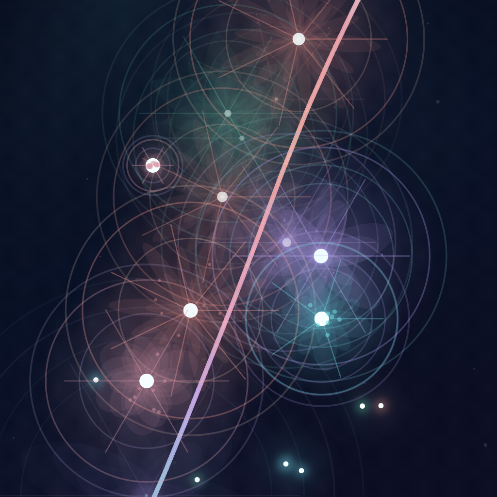

Connect
Trace through STARs and build a chain with your finger.
A game of connection, bloom, and discovery.
Connect the stars.
Let the sky bloom.
Trace a path through STARs, build a chain, and watch light spread across the sky. Some connections open into something unexpected.
HOSHITSUNAGI is the global name. 星繋 is its Japanese expression.

HOW IT PLAYS
You do not need a long rulebook to understand HOSHITSUNAGI. The play itself tells the story.
Trace through STARs and build a chain with your finger.
As the chain completes, color, rings, particles, and light spread from the play.
Some moments reveal SPECIALs — visual events that make each sky worth watching.
SPECIAL
HOSHITSUNAGI includes SPECIAL discoveries across flowers, fireworks, seasonal scenes, celestial motifs, and other visual patterns. They emerge from the same play language — not from a separate mode.
FLOWER · FIREWORKS · CELESTIAL · SEASONAL · GEOMETRY
The v1.0 icon is built from the same Bloom, overlap, transparency, and color language as the game.
REPLAY
Finished plays can be replayed. Return to the path, the Bloom, and the discoveries you created, then keep favorite replays or share a still or video from the app.
HOSHITSUNAGI / 星繋
HOSHITSUNAGI remains the official global brand. The adopted brush-written 星繋 adds a Japanese voice to the same world without replacing the name.

VERSION 1.0
Preparing for App Store release.